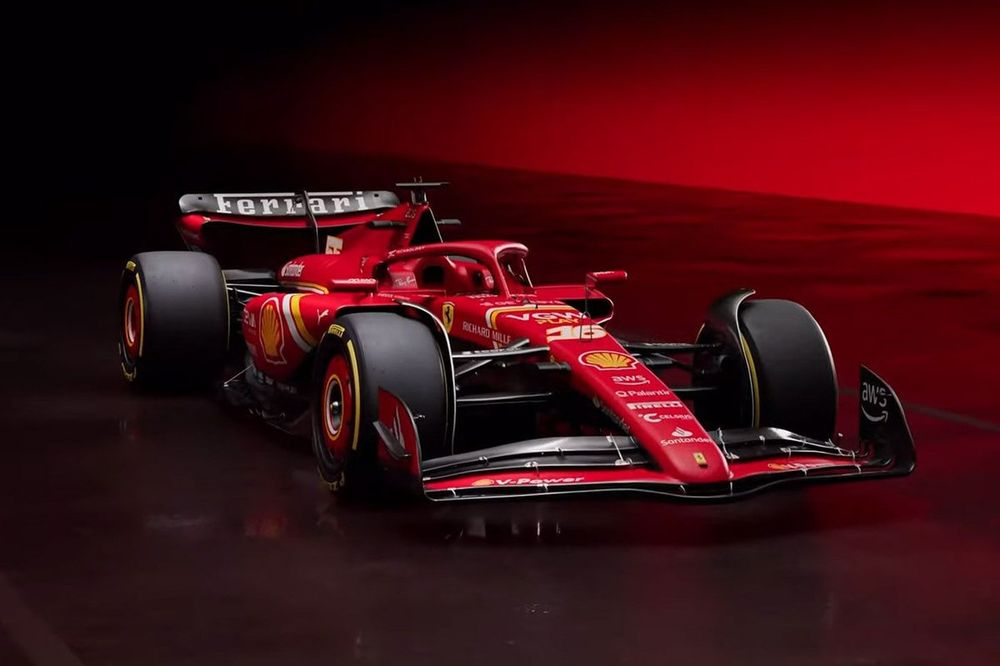
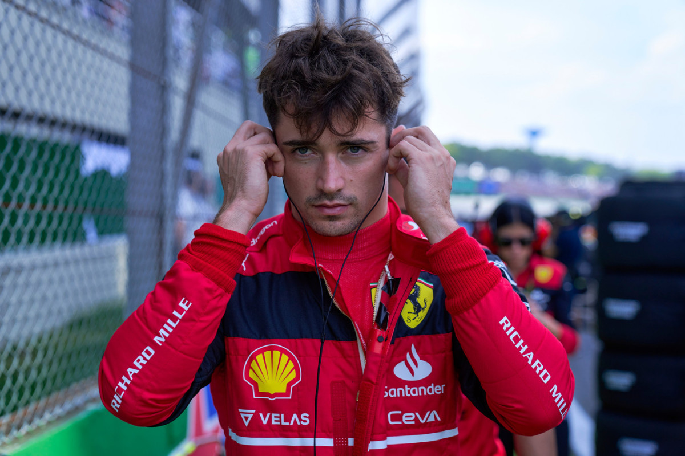
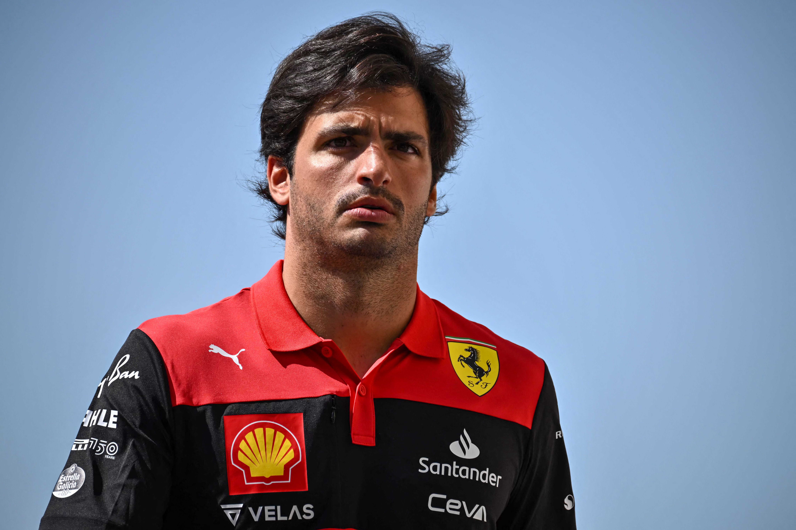
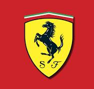

Ferrari F1 Team
| Car name |
Horse power |
Engine |
Gear box |
Weight |
0-200 |
| Ferrari SF-24 |
740 HP |
1.6L V6 Turbo charged |
8-speed DCT |
798 KG |
3s |

Charles Leclerc

Charles Leclerc is one of the most talented drivers in the past 4 years. He was born in Monaco 26 years ago.
He took his inspiration from his old father. Charles started his journey starting with the karting academy.
He was one of the best drivers in the academy and he got promoted to Formula 3.
That was the beginning of his professional career.
Later, he joined F2, then F1. That was his biggest achievement because many drivers can't even reach F2,
but till now he has 0 world championship titles.
Carlos Sainz

Carlos Sainz is a Spanish driver who drives for Scuderia Ferrari F1 Team since 2020 till now.
He is known as "King Sainz" or "EL MATADOR". He won two races this year.
Sainz started his career in karting in 2006, after participating in smaller series. In 2008,
he won the Asia-Pacific KF3 title, as well as finishing runner-up in the Spanish Championship. In 2009,
he also won the Junior Monaco Kart Cup and was runner-up in the European KF3 Championship.
Sainz became part of the Red Bull Junior Team in 2010. His father is Carlos Sainz Sr.
His father became famous for winning many races and winning the World Rally Championship twice.
F1 Team

The team was founded by Enzo Ferrari, initially to race cars produced by Alfa Romeo.
By 1947, Ferrari had begun building its own cars. Among its important achievements outside Formula One
are winning the World Sportscar Championship, 24 Hours of Le Mans, 24 Hours of Spa, 24 Hours of Daytona,
12 Hours of Sebring, Bathurst 12 Hour, races for Grand tourer cars, and racing on road courses of the Targa Florio,
the Mille Miglia, and the Carrera Panamericana. The team is also known for its passionate support base,
known as the tifosi. The Italian Grand Prix at Monza is regarded as the team's home race.
he team is named after its founder Enzo Ferrari. Scuderia is Italian for a stable reserved for racing horses,
and is also commonly applied to Italian motor racing teams. The prancing horse was the symbol used on Italian
World War I ace Francesco Baracca's fighter plane. It became the logo of Ferrari after the fallen ace's parents,
close acquaintances of Enzo Ferrari, suggested that Ferrari use the symbol as the logo of the Scuderia,
telling him it would "bring him good luck".
Visit us (click me)